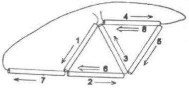
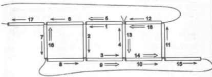
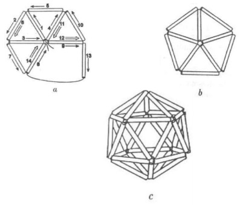
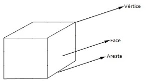
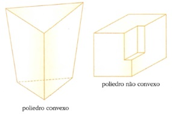

1º Bimestre
1. Logaritmos
Lista de Exercícios (2,0 pontos) Teste (3,0 pontos) Prova (5,0 pontos) Recuperação (10,0 pontos)Aula 1
* Logaritmos
loga c = b ⇔ ab = c
log2 8 = 3 ⇔ 23 = 8
Quando calculamos o logaritmo de um número em uma determinada base estamos perguntando: A base elevada a qual expoente é igual a determinada potência?
Exemplos:
1) Calcule log5 625.
6 linhas
2) Calcule log3 243.
6 linhas
3) Calcule.
a) log3 1
2 linhas
b) log5 5
2 linhas
4) Escreva cada logaritmo na forma de potência.
a) log25 5 = 1/2
b) log1/4 16 = -2
c) log3 27 = 3
d) log2 1024 = 10
5) Escreva cada potência na forma de logaritmo.
a) 23 = 8
b) 45 = 1024
c) 72 = 49
d) 36 = 729
Fazer exercícios 1 a 3 da lista.
Aula 2
* Propriedades dos Logaritmos
| expoente | 1 | 2 | 3 | 4 | 5 | 6 | 7 | 8 | 9 | 10 | 11 | 12 |
| 2expoente | 2 | 4 | 8 | 16 | 32 | 64 | 128 | 256 | 512 | 1024 | 2048 | 4096 |
1) Faça os cálculos sem usar calculadora.
a) 32 × 64 =
b) 8 × 128 =
c) 512 ÷ 64 =
d) 2048 ÷ 256 =
e) 322 =
f) 163 =
g) ∛512 =
h) ∜4096 =
a) Logaritmo de produto:
loga (b.c) = loga b + loga c
b) Logaritmo de quociente:
loga (b/c) = loga b - loga c
c) Logaritmo de potência:
loga bn = n · loga b
d) Mudança de base:
loga b = logc b / logc a
Exemplo:
Sabendo que log 2 = 0,3010 e log 3 = 0,4771
1) Calcule
a) log 6 =
b) log 1,5 =
c) log 5 =
d) log 27 =
e) log5 6 =
2) Sabendo que 5x = 27, calcule o valor de x.
2 linhas
Fazer exercícios 4 a 7 da lista.
Aula 3
* Aplicações de Logaritmos
Botânica. A altura média do tronco de certa espécie de árvore, que se destina à
produção de madeira,
evolui, desde que é plantada, segundo o seguinte modelo matemático:
h(t) = 1,5 + log3 (t + 1),
com h(t) em metro e t em ano. Se uma dessas árvores foi cortada quando seu tronco atingiu
3,5 m de altura, qual foi
tempo (em ano) transcorrido do momento da plantação até o do corte?
3,5 = 1,5 + log3 (t + 1)
3,5 - 1,5 = log3 (t + 1)
2 = log3 (t + 1)
32 = t + 1
9 = t + 1
9 - 1 = t
t = 8 anos
Finanças. O montante acumulado pela aplicação de R$ 1000,00 em um investimento de
renda fixa de 12% ao ano, pode ser
calculado pela fórmula
M = 1000 · (1,12)n,
onde n é o tempo em ano.
Em quanto tempo o valor do montante será de R$ 1200,00?
(Use: log 1,2 = 0,08 e log 1,12 = 0,05.)
1200 = 1000 · 1,12n
1200/1000 = 1,12n
1,2 = 1,12n
log 1,2 = log 1,12n
log 1,2 = n · log 1,12
n = log 1,2 / log 1,12
n = 0,08 / 0,05 = 1,6 anos
aproximadamente 1 ano e 7 meses
Fazer exercícios 8 a 11 da lista.
Teste: __/__/__ (3,0 pontos)
Matéria:
- Definição de logaritmos
- Cálculo de logaritmos
- Propriedades dos logaritmos.
- Aplicação dos logaritmos.
2. Poliedros
Aula 4 (Opcional)
* Construção de Poliedros com canudos
- Tetraedro Regular
- Cubo
- Icosaedro Regular
Aula 5
* Poliedros
Figura ou região espacial fechada limitada por polígonos (faces).
- Elementos:

- Vértices → Pontos
- Arestas → Segmentos de reta
- Faces → Regiões de planas poligonais
- Tipos de Poliedros
- Nomenclatura
| Nº de faces | Nome |
| 4 | tetraedro |
| 5 | pentaedro |
| 6 | hexaedro |
| 7 | heptaedro |
| Nº de faces | Nome |
| 8 | octaedro |
| 9 | eneaedro |
| 10 | decaedro |
| 11 | undecaedro |
| Nº de faces | Nome |
| 12 | dodecaedro |
| 13 | tridecaedro |
| ... | ... |
| 20 | icosaedro |
- Relação de Euler
Em todo poliedro convexo vale a relação:
V + F = A + 2
onde V é o nº de vértices, F é o nº de faces e A é o nº de arestas.
Exemplos
1) Quantos vértices possui um poliedro convexo possui 6 faces e 12 arestas? (mostrar cubo)
2) Quantas arestas possui um pentaedro convexo com 6 vértices? (mostrar prisma de base triangular)
3) Qual poliedro regular que possui 4 vértices e 6 arestas? (mostrar tetraedro regular)
Fazer exercícios 12 a 14 da lista.
Aula 6
* Problemas e Aplicações de Poliedros
1) Um poliedro convexo possui 3 faces quadrangulares, 2 faces triangulares e 2 faces pentagonais. Determine:
a) quantas faces ele possui.
b) quantas arestas ele possui.
c) quantos vértices ele possui.
2) Um poliedro convexo tem 1 ângulo triédrico, 3 ângulos tetraédricos e 2 ângulos pentaédricos. Determine:
a) quantos vértices ele possui.
b) quantas arestas ele possui.
c) quantas faces ele possui.
3) Um octaaedro regular seria montado numa aula de matemática usando canudos como arestas. Sabendo que um octaaedro regular possui 8 faces triangulares, quantos canudos seriam necessários para construí-lo?
4) Numa molécula tridimensional de carbono, os átomos ocupam os vértices de um
poliedro convexo com 12 faces pentagonais e 20 faces hexagonais regulares, como em uma bola de futebol.
Qual é o número de átomos de carbono na molécula? E o número de ligações entre esses átomos?
Fazer exercícios 15 a 19 da lista.
Prova: __/__/__ (5,0 pontos)
Matéria:
- Poliedros Convexos.
- Nomenclatura.
- Relação de Euler.
- Problemas e Aplicações.